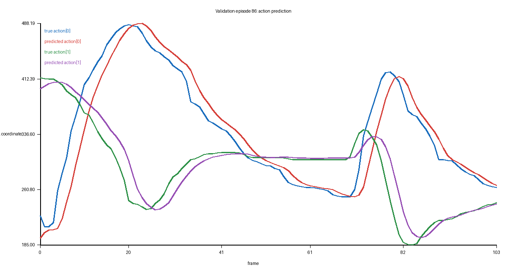

Normalization
state 和 action 都用训练集均值/方差归一化。
给当前 agent 位置 s∈R²，预测动作 a∈R²。模型是 2→256→256→2 的 MLP。
state 和 action 都用训练集均值/方差归一化。
165 train / 41 validation。
300 epochs，AdamW + cosine schedule。
normalized MSE 0.03817。
ssh h200_1727
docker exec -it zmz_dev_v2 bash
cd /mnt/models_2296/zmz/workspace/worldmodel_embodied_ai/04_lerobot_dataset
source .venv/bin/activate
python scripts/train_tiny_policy.py
这个模型没有看到 goal pose 和 block pose，因此不可能完整解决 PushT。它是 baseline，不是最终方案。
把不理解的地方直接发给老师/agent，最好附上你观察到的现象和报错。